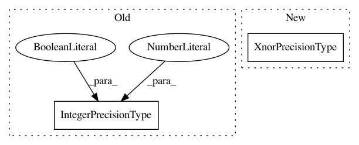

4fb74225bcb836f79e82bd4aa6cbade19cce1400,hls4ml/converters/keras/qkeras.py,QKerasBinaryQuantizer,__init__,#QKerasBinaryQuantizer#Any#Any#,38
Before Change
class QKerasBinaryQuantizer(object):
def __init__(self, config, xnor=False):
self.bits = 1 if xnor else 2
self.hls_type = IntegerPrecisionType(width=1, signed=False, xnor=True) if xnor else IntegerPrecisionType(width=2, signed=True)
self.alpha = config["config"]["alpha"]
// Use the QKeras quantizer to handle any stochastic / alpha stuff
self.quantizer_fn = get_quantizer(config)
After Change
class QKerasBinaryQuantizer(object):
def __init__(self, config, xnor=False):
self.bits = 1 if xnor else 2
self.hls_type = XnorPrecisionType() if xnor else IntegerPrecisionType(width=2, signed=True)
self.alpha = config["config"]["alpha"]
// Use the QKeras quantizer to handle any stochastic / alpha stuff
self.quantizer_fn = get_quantizer(config)
In pattern: SUPERPATTERN
Frequency: 5
Non-data size: 2
Instances
Project Name: hls-fpga-machine-learning/hls4ml
Commit Name: 4fb74225bcb836f79e82bd4aa6cbade19cce1400
Time: 2020-10-26
Author: sioni.summers10@imperial.ac.uk
File Name: hls4ml/converters/keras/qkeras.py
Class Name: QKerasBinaryQuantizer
Method Name: __init__
Project Name: hls-fpga-machine-learning/hls4ml
Commit Name: c51b45a2d318e4a27a403af5701dc36b3f119662
Time: 2020-10-23
Author: sioni.summers10@imperial.ac.uk
File Name: hls4ml/model/optimizer/passes/bn_quant.py
Class Name: QuantizeDenseOutput
Method Name: transform
Project Name: hls-fpga-machine-learning/hls4ml
Commit Name: 4fb74225bcb836f79e82bd4aa6cbade19cce1400
Time: 2020-10-26
Author: sioni.summers10@imperial.ac.uk
File Name: hls4ml/converters/keras/qkeras.py
Class Name:
Method Name: get_type
Project Name: hls-fpga-machine-learning/hls4ml
Commit Name: c51b45a2d318e4a27a403af5701dc36b3f119662
Time: 2020-10-23
Author: sioni.summers10@imperial.ac.uk
File Name: hls4ml/model/optimizer/passes/bn_quant.py
Class Name: BatchNormalizationQuantizedTanh
Method Name: initialize
Project Name: hls-fpga-machine-learning/hls4ml
Commit Name: 4fb74225bcb836f79e82bd4aa6cbade19cce1400
Time: 2020-10-26
Author: sioni.summers10@imperial.ac.uk
File Name: hls4ml/converters/keras/qkeras.py
Class Name: QKerasQuantizer
Method Name: __init__